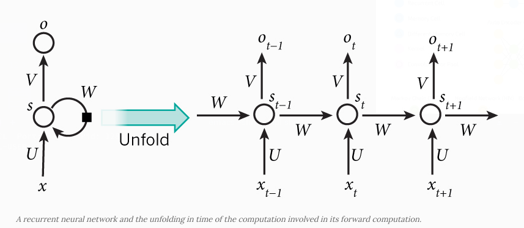
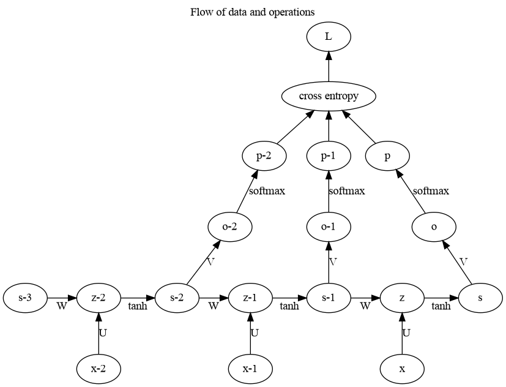
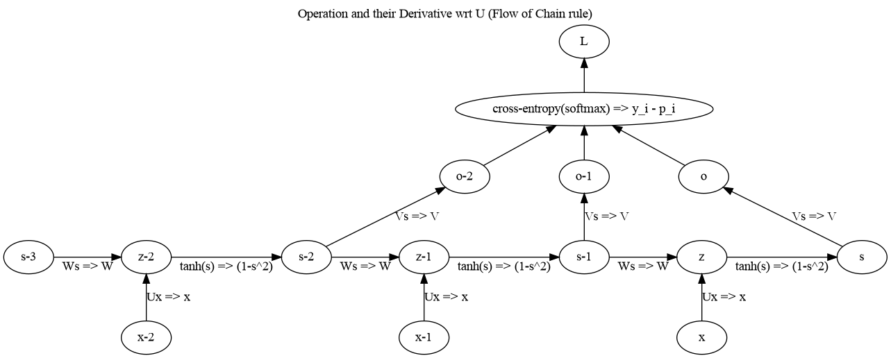
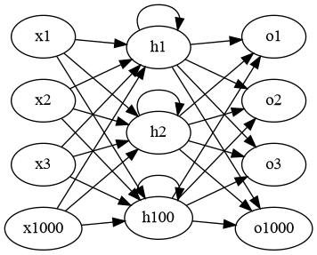

Recurrent Neural Network - Backpropagation Through Time
Table of Contents
Adopted from tutorial.
1. Download tokenized text from Brown Corpus and Import to CL
Download the corpus using nltk (Python Library)
< Collapse code block
import nltk from nltk.corpus import brown nltk.download("brown") data = brown.sents(categories=["science_fiction"]) with open("/tmp/sentences", mode='w') as file: file.write("( ") for sentence in data: file.write("( ") for word in sentence: file.write("\""+ word+"\" ") file.write(")\n") file.write(" )")
None
Load it into Common Lisp
< Collapse code block
(defparameter *sentences* (uiop:read-file-form #p"/tmp/sentences"))
2. Create training data
The input to our Recurrent Neural Networks are vectors, not strings. So we create a mapping between words and indices, index-to-word, and word-to-index. For example, the word “friendly” may be at index 2001. A training example x may look like [0, 179, 341, 416], where 0 corresponds to SENTENCE-START. The corresponding label y would be [179, 341, 416, 1]. Remember that our goal is to predict the next word, so y is just the x vector shifted by one position with the last element being the SENTENCE-END token. In other words, the correct prediction for word 179 above would be 341, the actual next word.
2.1. Assign index to each word
< Collapse code block
;; index-to-word & word-to-index (defparameter *word-count* (make-hash-table :test #'equal)) (loop for s in *sentences* do (loop for w in s for word = (string-downcase w) for count = (gethash word *word-count* 0) do (setf (gethash word *word-count*) (1+ count))))
There are
< Collapse code block
(hash-table-count *word-count*)
3032
unique words.
2.2. Create traning data by converting sentences to vector - also replace infrequent words with unknown-word
We remove less frequent words and take only 1000 words in our vocabulary. This limit is mainly because of the one-hot encoding we use for the words. So, the input vector size is 1000. The words that don't fall in our vocabulary are replaced by UKNONWN-WORD.
< Collapse code block
(defun hashtable-keys (hashtable) (let ((keys (make-array (hash-table-count hashtable) :fill-pointer 0))) (maphash (lambda (key value) (declare (ignore value)) (vector-push key keys)) hashtable) keys)) (defparameter *sorted-words* (sort (hashtable-keys *word-count*) #'> :key (lambda (word) (gethash word *word-count* 0)))) (defparameter *vocabulary_size* 1000) (defparameter *index-to-word* (make-array *vocabulary_size* :element-type 'string :initial-element "" :adjustable t :fill-pointer 3)) (defparameter *word-to-index* (make-hash-table :test #'equal :size *vocabulary_size*)) ;; start with index 3. (defconstant +SENTENCE-START+ 0) (defconstant +SENTENCE-END+ 1) (defconstant +UNKNOWN-WORD+ 2) (defparameter *data* (make-array (length *sentences*) :fill-pointer 0)) (let ((top-words (make-hash-table :test #'equal)) (index-counter 2)) (loop for w across *sorted-words* repeat (- *vocabulary_size* 3) do (setf (gethash w top-words) t)) (loop for s in *sentences* for x = (make-array (+ (length s) 2) :fill-pointer 0) do (vector-push +sentence-start+ x) (loop for w in s for word = (string-downcase w) for index = (gethash word *word-to-index*) do (if (gethash word top-words) (progn (unless index (setf index (incf index-counter)) (setf (gethash word *word-to-index*) index) (vector-push word *index-to-word*)) (vector-push index x)) (vector-push +unknown-word+ x))) (vector-push +sentence-end+ x) (setf (fill-pointer x) (+ (length s) 1)) (vector-push-extend (list x (make-array (+ (length s) 1) :displaced-to x :displaced-index-offset 1)) *data*))) (defun index-word (index) "Get word from index" (aref *index-to-word* index)) (defun word-index (word) "Get index from word" (gethash word *word-to-index*))
WORD-INDEX
Here’s an actual training example from the text (with corresponding index of the words):
< Collapse code block
(print (first *sentences*)) (print (aref *data* 0))
("Now" "that" "he" "knew" "himself" "to" "be" "self" "he" "was" "free" "to"
"grok" "ever" "closer" "to" "his" "brothers" "," "merge" "without" "let" ".")
(#(0 3 4 5 6 7 8 9 10 5 11 12 8 13 14 15 8 16 17 18 2 19 20 21)
#(3 4 5 6 7 8 9 10 5 11 12 8 13 14 15 8 16 17 18 2 19 20 21 1))
3. RNN Structure
Let’s get concrete and see what the RNN for our language model looks like. The input x will be a sequence of words (just like the example printed above) and each xt is a single word. But there’s one more thing: Because of how matrix multiplication works we can’t simply use a word index (like 36) as an input. Instead, we represent each word as a one-hot vector of size vocabulary-size. For example, the word with index 36 would be the vector of all 0’s and a 1 at position 36. So, each xt will become a vector, and x will be a matrix, with each row representing a word. We’ll perform this transformation in our Neural Network code instead of doing it in the pre-processing. The output/predictions of our network p has a similar format. Each pt is a vector of vocabulary-size elements, and each element represents the probability of that word being the next word in the sentence.

Figure 1: RNN (copied from the tutorial; (In this document ot is replaced with pt))
\(s_t = \tanh (Ux_t + Ws_{t-1})\) \(p_t = \textrm{softmax}(Vs_t)\)
Let our vocabulary size be \(C\), and hidden layer size (i.e. number of neurons in the hidden layer be \(H\)) then
- \(x_t \in R^{C}\)
- \(p_t \in R^C\)
- \(s_t \in R^H\)
- \(U \in R^{H \times C}\)
- \(V \in R^{C \times H}\)
- \(W \in R^{H \times H}\)
This is valuable information. Remember that U,V and W are the parameters of our network we want to learn from data. Thus, we need to learn a total of 2HC + H2 parameters. In the case of C=1000 and H=100 that’s 210,000. The dimensions also tell us the bottleneck of our model. Note that because xt is a one-hot vector, multiplying it with U is essentially the same as selecting a column of U, so we don’t need to perform the full multiplication. Then, the biggest matrix multiplication in our network is Vst. That’s why we want to keep our vocabulary size small if possible.
4. Initialization
We start by declaring a RNN network class and initializing our parameters.Initializing the parameters U,V and W is a bit tricky. We can’t just initialize them to 0’s because that would result in symmetric calculations in all our layers. We must initialize them randomly. Because proper initialization seems to have an impact on training results there has been lot of research in this area. It turns out that the best initialization depends on the activation function (\(\tanh\) in our case) and one recommended approach is to initialize the weights randomly in the interval from \(\left[-\frac{1}{\sqrt{n}}, \frac{1}{\sqrt{n}}\right]\) where n is the number of incoming connections from the previous layer. This may sound overly complicated, but don’t worry too much it. As long as you initialize your parameters to small random values it typically works out fine.
< Collapse code block
(defun make-random-matrix (m n) (let ((matrix (make-array (list m n) :element-type 'double-float :initial-element 0d0)) (1/sqrtn (coerce (/ (sqrt n)) 'double-float))) (loop for i from 0 below m do (loop for j from 0 below n for random = (random (* 2 1/sqrtn)) do (setf (aref matrix i j) (- random 1/sqrtn)))) matrix)) (defclass network () ((H :accessor H :initarg :H) (C :accessor C :initarg :C) (U :accessor U ) (V :accessor V ) (W :accessor W ))) (defmethod initialize-instance :after ((n network) &key) (with-slots (H C) n (setf (slot-value n 'U) (make-random-matrix H C)) (setf (slot-value n 'V) (make-random-matrix C H)) (setf (slot-value n 'W) (make-random-matrix H H))))
5. Forward Propagation
< Collapse code block
(defun matrix-dot-vector (matrix vector) "pointwise operate f on matrix . vector" (let* ((m (array-dimension matrix 0)) (n (array-dimension matrix 1)) (result (make-array m :element-type 'double-float :initial-element 0d0 :fill-pointer 0))) (loop for i from 0 below m do (vector-push (loop for j from 0 below n summing (* (aref matrix i j) (aref vector j))) result)) result)) (defun matrix-dot-index (matrix index) "matrix . vector; where vector is one shot representation of index" (let* ((m (array-dimension matrix 0)) (n (array-dimension matrix 1)) (result (make-array m :element-type 'double-float :initial-element 0d0 :fill-pointer 0))) (loop for i from 0 below m do (vector-push (aref matrix i index) result)) result)) (defun softmax% (vector) "Destructively calculates softmax" (map-into vector (lambda (x) (exp x)) vector) (let ((sum (reduce #'+ vector))) (map-into vector (lambda (x) (/ x sum)) vector) vector)) (defun map-into2 (function &rest sequences) "map `function' into the first of the `sequences'" (apply #'map-into (first sequences) function sequences)) (defmethod forward-propagate ((n network) x) (with-slots (U V W) n (let ((s (make-array (length x))) ;; hidden state at each timestep (p (make-array (length x)))) ;; output at each timestep (loop for time from 0 below (length x) for xt = (aref x time) do (setf (aref s time) (if (= time 0) (matrix-dot-index U xt) (map-into2 (lambda (x y) (tanh (+ x y))) (matrix-dot-index U xt) (matrix-dot-vector W (aref s (1- time)))))) (setf (aref p time) (softmax% (matrix-dot-vector V (aref s time))))) (values p s))))
6. Loss Function
To train our network we need a way to measure the errors it makes. We call this the loss function L, and our goal is find the parameters U,V and W that minimize the loss function for our training data. A common choice for the loss function is the cross-entropy loss. If we have N training examples (words in our text) and C classes (the size of our vocabulary) then the loss with respect to our predictions p and the true labels y is given by:
\begin{equation} L(y,p) = -\frac 1 N \sum_{n\in N} \log(\vec{y}_n . \vec{p}_n) \end{equation}< Collapse code block
(defun loss (output y-indices) "Loss for a single sentence; output `output' from the network, the actual target `y' " (/ (loop for p_t across output for y across y-indices summing (log (aref p_t y))) -1)) (defmethod calculate-total-loss ((n network) inputs targets) "Loss for all sentences `inputs' and `outputs'" (/ (loop for input in inputs for target in targets summing (loss (forward-propagate n input) target)) (loop for i in inputs summing (length i))))
6.1. Testing forward-propagation and loss calculation
< Collapse code block
(let ((network (make-instance 'network :c 1000 :h 100)) (*data* (make-array 100 :displaced-to *data*))) (calculate-total-loss network (map 'list #'first *data*) (map 'list #'second *data*)))
6\.907459817685422d0
We have C words in our vocabulary, so each word should be (on average) predicted with probability 1/C, which would yield a loss of logC = log1000 = 6.9077554.
Our value is also quite close, so we are in the right track.
7. Training the RNN with SGD and Backpropagation Throught Time (BPTT)
7.1. Derivative of loss function wrt output
\(\vec{o}\) is the output \(V . \vec{s}\) and the softmax function turns that into probabilities \(\vec{p}\)
\begin{equation*} p_j = \frac{e^{o_j}}{\sum_k e^{o_k}} \end{equation*}and the loss for this output is
\begin{equation*} L = - \sum_j y_j \log p_j \end{equation*}where \(\vec{y}\) is one-shot representation of desired output implying \(\sum_j y_j = 1\)
Thus, following the derivation here you get the derivative to be:
\begin{equation*} \frac{\partial L}{\partial o_i} = p_i - y_i \end{equation*}7.2. Diagramatic representation


7.3. Code
Lets implement Backpropagation through time
< Collapse code block
(defun incf-outer-product (place vec-a vec-b) "Add the outer product of `vec-a' and `vec-b' into `place'" (let ((n (array-dimension place 0)) (m (array-dimension place 1))) (assert (= n (length vec-a))) (assert (= m (length vec-b))) (loop for i from 0 below n do (loop for j from 0 below m do (incf (aref place i j) (* (aref vec-a i) (aref vec-b j))))) place)) (defun incf-outer-product-with-index (place vec-a vec-b-index) (let ((n (array-dimension place 0)) (m (array-dimension place 1))) (assert (= n (length vec-a))) (assert (< vec-b-index m)) (loop for i from 0 below n do (incf (aref place i vec-b-index) (aref vec-a i))) place)) (defun matrix-T-dot-vector (matrix vector) "Multiply transpose of `matrix' with `vector'" (destructuring-bind (m n) (array-dimensions matrix) (assert (= m (length vector))) (let ((result (make-array n))) (loop for j from 0 below n do (setf (aref result j) (loop for i from 0 below m summing (* (aref matrix i j) (aref vector i))))) result))) (defun bptt (n x y &key (bptt-truncate 4)) (declare (optimize (debug 3))) (check-type n network) (with-slots (U V W) n (multiple-value-bind (p s) (forward-propagate n x) ;; p[t] = softmax(o[t] = V s[t]), s[t] = tanh(Ux + W s[t-1]) (let ((dL/dU (make-array (array-dimensions (U n)))) (dL/dV (make-array (array-dimensions (V n)))) (dL/dW (make-array (array-dimensions (W n)))) dL/do (di (make-array (array-dimension W 0)))) ;; replace p with dL/do = p - y (loop for i from 0 below (length p) for index across y do (decf (aref (aref p i) index) 1)) (setf dL/do p) ;; for each output backwards (loop for time from (1- (length y)) downto 0 do ;; dL/dV += L_i s[t]^j (incf-outer-product dL/dV (aref dL/do time) (aref s time)) ;; di = L_k V^k_i [ 1 - (s^i)^2] (loop for i from 0 below (length di) do (setf (aref di i) (* (- 1 (expt (aref (aref s time) i) 2)) (loop for k from 0 below (array-dimension V 1) summing (* (aref (aref dL/do time) k) (aref V k i)))))) ;; accumulate error for bptt-truncate steps back in time (loop for time2 from time downto (max 0 (- time bptt-truncate)) do ;; dL/dW += d_i s^j_,-1 + d_i,-1 s^j_,-2 + ... (unless (= 0 time2) (incf-outer-product dL/dW di (aref s (- time2 1)))) ;; dL/dU += d_i x^j + d_i,-1 x^j_,-1 + ... (incf-outer-product-with-index dL/dU di (aref x time)) ;; d_i,-n = d_m,-n+1 W^m_i [ (1 - (s^i_, -n)^2)] (unless (= 0 time2) (map-into di (lambda (dW_i s^i) (* dW_i (- 1 (expt s^i 2)))) (matrix-t-dot-vector W di) (aref s time2))))) (values dL/dU dL/dV dL/dW)))))
7.4. Test of BPTT
We can always check backpropagation with an acutal gradient computed using
\begin{equation*} \frac{\partial f(x;\theta)} {\partial \theta} = \lim_{h \to 0} \frac {f(x; \theta +h ) - f(x; \theta)} {h} \end{equation*}< Collapse code block
(defun gradient-check (n x y) (declare (optimize (debug 3))) (with-slots (U V W) n (multiple-value-bind (dL/dU dL/dV dL/dW) (bptt n x y :bptt-truncate 40) ;; for each variable take a random parameters and check it (let ((loss (loss (forward-propagate n x) y)) (new-loss nil) (diff 0.0001) (actual-derivative nil)) (loop repeat 5 do (loop for derivative-var in (list dL/dU dL/dV dL/dW) for var in (list U V W) for name in '(U V W) for i = (random (array-dimension var 0)) for j = (random (array-dimension var 1)) for original-value = (aref var i j) do (format t "~& Checking at ~d,~d of ~s" i j name) (incf (aref var i j) diff) (setf new-loss (loss (forward-propagate n x) y)) (setf (aref var i j) original-value actual-derivative (/ (- new-loss loss) diff)) (format t "~& Actual Derivative: ~f" actual-derivative) (format t "~& Computed Derivative: ~f" (aref derivative-var i j)) (unless (= actual-derivative 0.0d0) (when (< (abs (/ (aref derivative-var i j) actual-derivative)) .9) (format t "~&[WARNING] Relative Error > 90% !!!"))))))))) (let ((n (make-instance 'network :c 1000 :h 10))) (destructuring-bind (x y) (aref *data* 0) (gradient-check n x y)))
Checking at 1,933 of U Actual Derivative: 0.0 Computed Derivative: 0.0 Checking at 866,6 of V Actual Derivative: -0.000019541062595428733 Computed Derivative: -0.000019541967203488295 Checking at 0,9 of W Actual Derivative: -0.013063465519599794 Computed Derivative: 0.02276368401665077 Checking at 2,122 of U Actual Derivative: 0.0 Computed Derivative: 0.0 Checking at 839,1 of V Actual Derivative: 0.0001507862672844925 Computed Derivative: 0.00015078568191896963 Checking at 1,0 of W Actual Derivative: 0.0007341455629026561 Computed Derivative: -0.015454469780238055 Checking at 0,159 of U Actual Derivative: 0.0 Computed Derivative: 0.0 Checking at 330,9 of V Actual Derivative: -0.00010548660878157174 Computed Derivative: -0.0001054866726425041 Checking at 7,1 of W Actual Derivative: -0.011276178498253225 Computed Derivative: -0.0033533307913708663 [WARNING] Relative Error > 90% !!! Checking at 2,118 of U Actual Derivative: 0.0 Computed Derivative: 0.0 Checking at 558,3 of V Actual Derivative: -0.00008898126904709327 Computed Derivative: -0.00008898159965005954 Checking at 6,5 of W Actual Derivative: 0.0005569091995027611 Computed Derivative: -0.015009585574136189 Checking at 3,381 of U Actual Derivative: 0.0 Computed Derivative: 0.0 Checking at 922,4 of V Actual Derivative: 0.000035769006438858855 Computed Derivative: 0.00003576841434122246 Checking at 4,3 of W Actual Derivative: 0.014327403128352624 Computed Derivative: 0.029498057807640476
This shows that our BPTT algorithm has higher probability of being correct. only few check are giving warning. and that can be because of numerical errors/rounding.
7.5. Stochastic Gradient Descent
< Collapse code block
(defun update-matrix (M diff rate) (loop for i from 0 below (array-dimension M 0) do (loop for j from 0 below (array-dimension M 1) do (setf (aref M i j) (- (aref M i j) (* rate (aref diff i j))))))) (defmethod sgd-step ((n network) x y learning-rate) (multiple-value-bind (dL/dU dL/dV dL/dW) (bptt n x y) (with-slots (U V W) n (update-matrix U dL/dU learning-rate) (update-matrix V dL/dV learning-rate) (update-matrix W dL/dW learning-rate)))) (defmethod train-with-sgd ((n network) xs ys &key (learning-rate 0.005) (epoch 100) (evaluate-loss-after 5)) (loop for i from 0 below epoch with losses = nil for clock-time = (get-internal-real-time) do (when (and (not (= i 0)) (= 0 (mod i evaluate-loss-after))) (push (calculate-total-loss n xs ys) losses) (format t "~& Loss = ~f" (first losses)) (when (and (> (length losses) 1) (> (first losses) (second losses))) ;; when loss increased (setf learning-rate (* 0.5 learning-rate)) (format t "~&Loss increased; so learning-rate is decreased to ~f" learning-rate))) (loop for y in ys for x in xs for i from 0 do (sgd-step n x y learning-rate) (when (= 0 (mod i 50)) (format t "~& ~d examples learned" i))) (format t "~& Epoch ~d done in ~f seconds." i (/ (- (get-internal-real-time) clock-time) internal-time-units-per-second))))
8. Train!!
Lets initialize a RNN with a single hidden layer. The input and output layers have 1000 neurons and the hidden layer has 100 neurons.

< Collapse code block
(defparameter *network* (make-instance 'network :c *vocabulary_size* :h 100)) (train-with-sgd *network* (subseq (map 'list #'first *data*) 100) (subseq (map 'list #'second *data*) 100))
0 examples learned
50 examples learned
Epoch 0 done in 17.47 seconds.
0 examples learned
50 examples learned
Epoch 1 done in 17.55 seconds.
0 examples learned
50 examples learned
Epoch 2 done in 17.46 seconds.
0 examples learned
50 examples learned
Epoch 3 done in 17.480001 seconds.
0 examples learned
50 examples learned
Epoch 4 done in 17.58 seconds.
Loss = 4.710042288388026
0 examples learned
50 examples learned
Epoch 5 done in 22.71 seconds.
0 examples learned
50 examples learned
Epoch 6 done in 17.32 seconds.
0 examples learned
50 examples learned
Epoch 7 done in 17.47 seconds.
0 examples learned
50 examples learned
Epoch 8 done in 17.68 seconds.
0 examples learned
50 examples learned
Epoch 9 done in 17.53 seconds.
Loss = 4.497564963056905
0 examples learned
50 examples learned
We can see that the loss is decreasing. However the time taken for each epoch (just 100 sentences) is ~ 17 seconds.
9. Lets check predictions
< Collapse code block
(defun argmax (vector) (loop with h = (aref vector 0) with hi = 0 for i from 1 below (length vector) for v = (aref vector i) do (when (> v h) (setf h v hi i)) finally (return hi))) (defun prediction (n x) (let ((p (forward-propagate n x))) (loop for pword across p for i from 0 with aword = nil do (if (< i (length x)) (setf aword (aref x i)) (setf aword nil)) (format t "~& ~s ~t~t~t ~s" (index-word aword) (index-word (argmax pword)))))) (prediction *network* (first (aref *data* 0)))
"" "``" "now" "" "that" "" "he" "." "knew" "." "himself" "." "to" "." "be" "." "self" "." "he" "." "was" "." "free" "." "to" "." "grok" "." "ever" "." "closer" "." "to" "." "his" "." "brothers" "." "," "." "" "." "without" "." "let" "." "." ""
Unfortunately with just 9 epochs of learning, the RNN hasn't learnt anything yet.